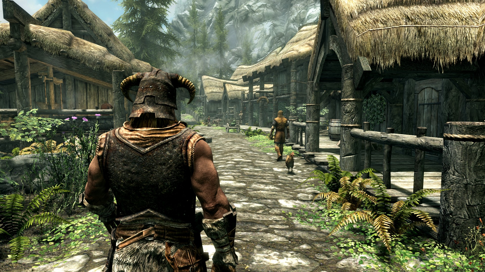

Skyrim
The Elder Scrolls V: Skyrim is an open-world action role-playing video game developed by Bethesda Game Studios and published by Bethesda Softworks. It is the fifth main installment in the Elder Scrolls series, following 2006's The Elder Scrolls IV: Oblivion, and was released worldwide for Microsoft Windows, PlayStation 3, and Xbox 360 on November 11, 2011.
The game's main story revolves around the player's character, the Dragonborn, on their quest to defeat Alduin the World-Eater, a dragon who is prophesied to destroy the world. The game is set 200 years after the events of Oblivion and takes place in Skyrim, the northernmost province of Tamriel. Over the course of the game, the player completes quests and develops the character by improving skills. The game continues the open-world tradition of its predecessors by allowing the player to travel anywhere in the game world at any time, and to ignore or postpone the main storyline indefinitely.
Skyrim was developed using the Creation Engine, rebuilt specifically for the game. The team opted for a unique and more diverse open world than Oblivion's Imperial Province of Cyrodiil, which game director and executive producer Todd Howard considered less interesting by comparison. Upon release, the game received critical acclaim, with praise for its character advancement, world design, visuals, and dual-wielding combat. Minor criticism targeted the melee combat, dragon battles, and the numerous technical issues present at launch. Critics consider Skyrim one of the greatest video games of all time. The game shipped over seven million copies to retailers within the first week of its release, and over 30 million copies on all platforms as of November 2016, making it one of the best selling video games in history.